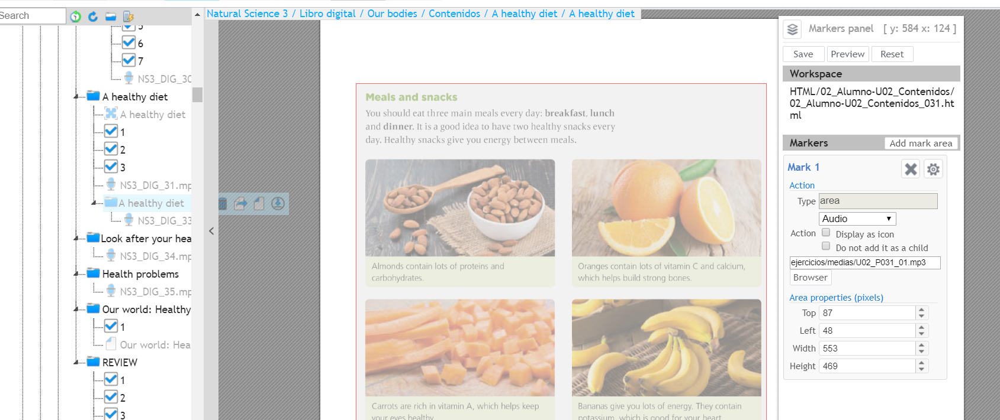
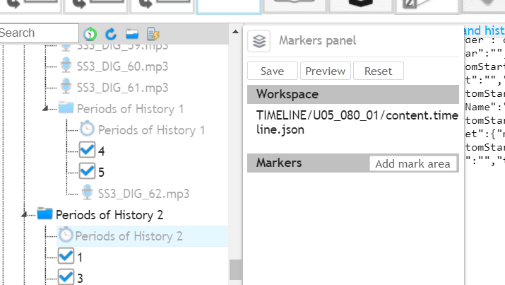

En este manual vamos a ver como se enlazan los contenidos interactivos que contienen nuestras publicaciones digitales. Algunos de ellos irán vinculados a las propias páginas del libro, otros en módulos independientes creados a tal fin y en algunas ocasiones pueden ir enlazados en varias ubicaciones a la vez.
Como su propio nombre indica un Hotspot es una “zona caliente”. Esto quiere decir, que es un área de la página web que se muestra en pantalla en la que, al pasar el cursor por encima, permite pulsar y abrirá una acción determinada:
Los hotspot pueden ser de múltiples contenidos diferentes como actividades, audios, karaokes, etc. Cada uno de estos contenidos tiene que ser creado de forma independiente, aunque su creación es objeto de un manual posterior.
En este manual, vamos a aprender como vincular este tipo de contenidos a un libro, por lo que éste debe estar previamente digitalizado tal y como se ha explicado en los manuales precedentes.
Para enlazar los contenidos interactivos a nuestro libro, necesitamos de nuevo la herramienta CAT.
Para poder logarse en el CAT es necesario disponer de:


Para la creación de los hotspot, necesitamos la herramienta de edición del CAT “Markers Editor”.
En primer lugar, debemos seleccionar la página del TOC en la que queremos crear un hotspot. Para ello, tan solo debemos pulsar (un solo clic) la página. En este punto hay que recordar que, para la creación de las páginas del libro, se tuvo especial cuidado a la hora de mantener la paginación real desde el corte de los pdf hasta la creación del manifiesto, precisamente para que, en este momento, podamos identificar cada una de las páginas del libro.
Al pulsar sobre la página, en la parte derecha de la zona de trabajo, se nos mostrará además de la imagen digitalizada de la página, un panel denominado “Markers panel”:

Este panel, es la herramienta de trabajo necesaria para la creación de los hotspot. En primer lugar, vemos que nos muestra información de la página que vamos a editar. En el apartado “Workspace” nos indica el HTML de la página que nos está mostrando, y la simple lectura de la nomenclatura del archivo nos indica mucha información. Analicemos el ejemplo de la captura que se adjunta a continuación:
02_Alumno-U02_Contenidos_022.html:
Por tanto, para conocer toda la información de cualquiera de las páginas, tan solo bastará con pulsar en el TOC cada una de ellas y leer la información que nos proporciona el Workspace.
Si el proceso de creación del manifiesto no ha seguido los pasos descritos desde el inicio de forma estricta, el resto de los procesos a partir de aquí darán lugar a problemas en el libro, por lo que, si cualquier editor detecta un error de nomenclatura o paginación en cualquiera de las páginas del libro, debe avisar al supervisor para solucionarlo antes de continuar implementando contenidos.
El panel de Markers panel puede aparecer en diferentes zonas de la pantalla de trabajo dependiendo del navegador elegido, aunque el mismo permite ser arrastrado por el usuario, para colocarlo en la zona que le resulte más cómoda para realizar el trabajo:
Para crear un hotspot en el Markers panel pulsamos el botón “Add mark area”. Observamos que bajo el epígrafe Markers se despliega un pequeño panel denominado “Mark 1” y en la imagen de la pag nos aparece un cuadrado sombreado:
Para abrir (o cerrar) el Mark 1 pulsamos el icono “Resources properties”:

En el campo Type hay un desplegable que nos permite seleccionar el tipo de contenido que vamos a enlazar (actividad, audio, video, etc.):

El campo Browser nos abre un buscador de archivos para seleccionar el archivo correspondiente a contenido a enlazar, aunque también podríamos teclear directamente la ruta en el recuadro que tiene encima si la conociéramos (procedimiento nada recomendable). Una vez seleccionemos el archivo en el buscador, la ruta nos aparecerá directamente en el recuadro indicado:

En el Area propiertries (pixels) existen unos cursores de desplazamiento que nos permiten dimensionar el cuadro sombreado que nos apareció de inicio sobre la página. Puede utilizarse:

El resto de las opciones disponibles en este panel, se irán explicando en cada uno de los tipos específicos de hotspots que podemos generar.
Una vez, se han rellenado todos los campos necesarios del mark 1, podemos pulsar:
Podemos añadir cuantos marks sean necesarios a cada página, pulsando el botón Add mark área:

Cada guardado del Markers panel, guardará todos los cambios que se hayan introducido en todos los marks existentes en la pag, por lo que hay que tener cuidado de no modificar marks correctos generados previamente.
La eliminación de un hotspot que ya ha sido guardado requiere 2 pasos a realizar en el siguiente orden:


Si no se realizan ambos pasos, el hotspot no desaparece del todo del libro. Este doble borrado, es una de las opciones imprescindibles para los diferentes tipos de enlace que tendrán nuestros contenidos y que se irán comprendiendo a lo largo de este manual, ya que, dependiendo de las ocasiones, necesitaremos que un hotspot se encuentre en el TOC y en la página, sólo en el TOC o sólo en la página.
Tal y como hemos visto, hay gran diversidad de hotspot, y diferentes opciones de configuración. Por tanto, vamos a ir viendo los casos más habituales uno por uno.
Como se ha explicado en el apartado de creación de un hotspot, generamos un mark nuevo. En el campo Type debemos seleccionar Exercise (es la que aparece por defecto).
En el ejemplo vamos a enlazar la actividad que corresponde con el ejercicio 1 de la pag, por tanto, definimos el area sobre la misma:
Seleccionamos el archivo que contiene dicha actividad pulsando el botón Browser:

El buscador, está programado para localizar la ruta en la que se encuentran las actividades (siempre y cuando previamente se haya seleccionado el type exercise). Además, mostrará por defecto las actividades que pertenezcan a la pagina en la que nos encontramos, dado que las actividades habrán sido creadas previamente a su enlace y nombradas según el siguiente criterio (U01_018_01.html):
Cuando vamos a seleccionar el archivo correspondiente en el browser, si pinchamos en el icono de la lupa, se nos abrirá una previsualización, que nos permite revisar la actividad antes incluso de enlazarla (utilizamos otro libro para ver este ejemplo):

Del mismo modo, se generan tantos marks como actividades tenga la página en cuestión y al finalizar pulsamos el Save del Markers panel para que guarde cambios en la página y nos transfiera la actividad al TOC:

Habitualmente, las actividades no necesitas ser renombradas en la parte del TOC, ya que, por defecto, el CAT las denomina con el número indicado en el nombre del archivo de la misma. Pero si fuera necesario editar el nombre por algún motivo, se accedería al editor, y se editaría del mismo modo que se han editado los títulos de las páginas explicado en el :
Las actividades deben colocarse en el TOC como hijos de la página a la que pertenecen, por tanto, en las pág. de epígrafe como en el ejemplo que estamos viendo, deberán recolocarse del mismo modo que hicimos con las páginas en la configuración del TOC y guardar pulsando el SAVE de la zona de TOC:

Esta operación, ha de realizarse con todas y cada una de las actividades del libro que se hayan generado como actividad interactiva, incluyéndolas página a página.
Para comprender mejor el funcionamiento vamos a ver como ha quedado este tipo de enlace en un libro.
Las áreas que hemos dimensionado sobre la imagen de la página aparecerán sombreadas en el libro cuando pasemos el cursor por encima, éste cambiará a mano y nos permitirá pulsar para abrir la actividad. Todo este proceso, funcionará con todos y cada uno de los marks que existan en el Markers panel:
Además, si presionamos el primer botón situado junto al buscador, nos mostrará todos los hotspot que contenga la página:
De esta manera, si realizamos el primer paso del borrado del hotspot de una actividad, ésta desaparecerá del índice, pero seguirá estando activa en la página. Si por el contrario borramos el mark dejando el ítem hijo en el toc, no se podrá acceder a la actividad desde la página, pero seguirá apareciendo y estando activa como actividad dentro del índice.
Para que la actividad desaparezca por completo, habría que realizar el doble borrado explicado en el apartado eliminación de un hotspot.
Lo habitual es que las actividades estén en ambos lugares, sin embargo, habrá que ceñirse a las directrices marcadas por la editorial, en cada proyecto concreto.
Como se ha explicado en el apartado de creación de un hotspot, generamos un mark nuevo. En el campo Type debemos seleccionar Audio.
En el ejemplo vamos a enlazar el audio, corresponde con un texto de la página, por tanto, definimos el área sobre el mismo:
Seleccionamos el archivo que contiene dicho audio pulsando el botón Browser:

El buscador, está programado para localizar la ruta en la que se encuentran los audios (siempre y cuando previamente se haya seleccionado el type audio). Además, mostrará por defecto los audios que pertenezcan a la página en la que nos encontramos, dado que los mismos deberían haber sido creados previamente a su enlace y nombrados según el siguiente criterio (U01_018_01.html):
Cuando vamos a seleccionar el archivo correspondiente en el browser, si pinchamos en el icono de la lupa, se nos abrirá una previsualización, que nos permite escuchar el audio antes incluso de enlazarlo:
En muchas ocasiones, los audios, no siguen este sistema de renombrado, ya que, por motivos de editorial, es necesario que muestren por ejemplo un código interno de la pista de audio. En este caso, el buscador no nos lo mostraría directamente, pero podemos teclear .mp3 en el buscador, y nos mostrará todos los archivos de audio disponibles para seleccionar el que nos interese:
Del mismo modo, se generan tantos marks como audios tenga la página en cuestión y al finalizar pulsamos el Save del Markers panel para que guarde cambios en la página y nos transfiera la actividad al TOC:
Observamos que se nos ha creado un ítem hijo, con icono de micrófono, lo que indica que es un audio. Observamos que por defecto aparece con el nombre del archivo y en texto más diluido que indica que tiene el parámetro is visible=no, y por tanto dicho título no sería visible en el índice del libro interactivo.
Esta operación, ha de realizarse con todos y cada uno de los audios del libro que nos hayan proporcionado, incluyéndolos página a página.
Los hotspots de Dz se realizan exactamente igual que los audios. Tan sólo cambiaremos la opción del type del Markers panel por Deep Zoom:
En el caso del Browser, los dz deben llevar siempre la nomenclatura correcta para que los muestre por defecto por página:
Una vez salvado, el icono que nos aparece en el TOC es diferente y muestra una especie de X con volumen:
Las opciones de renombrado y colocación son exactamente las mismas explicadas en el apartado de audios.
Los hotspots de líneas de tiempo se realizan exactamente igual que los audios. Tan sólo cambiaremos la opción del type del Markers panel por Timeline:
En el caso del Browser, los timelines deben llevar siempre la nomenclatura correcta para que los muestre por defecto por página:
Una vez salvado, el icono que nos aparece en el TOC es diferente y muestra un pequeño reloj:
Las opciones de renombrado y colocación son exactamente las mismas explicadas en el apartado de audios.
Los hotspots de karaoke se realizan exactamente igual que los audios. Tan sólo cambiaremos la opción del type del Markers panel por Karaoke:

En el caso del Browser, los karaokes pueden llevar distintas nomenclaturas:

Una vez salvado, el icono que nos aparece en el TOC es diferente y muestra unas notas musicales con letras:
Las opciones de renombrado y colocación son exactamente las mismas explicadas en el apartado de audios.